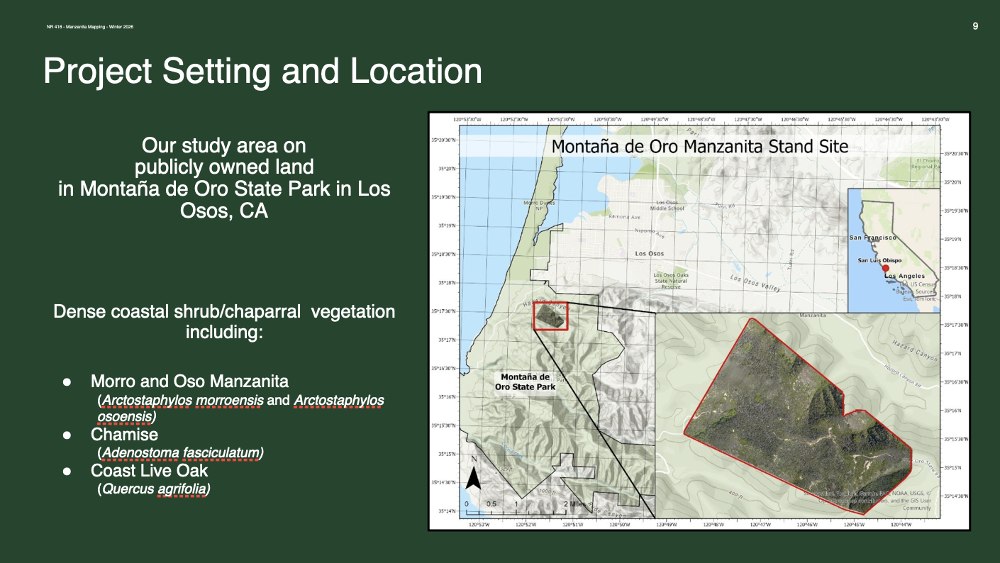
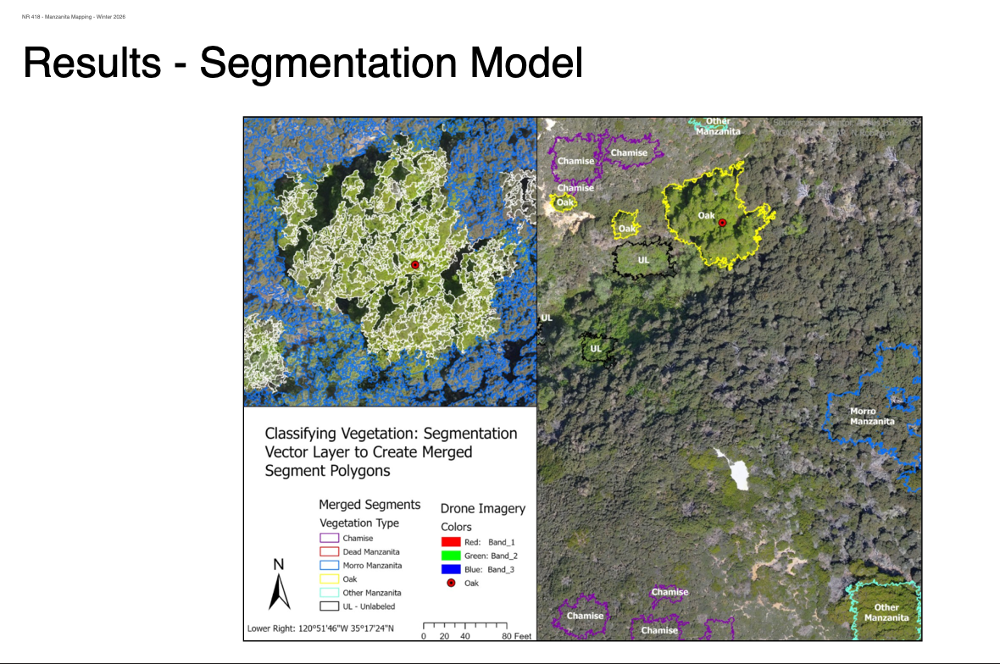
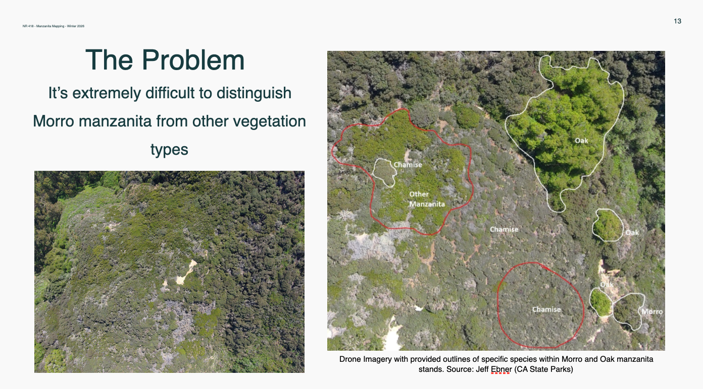

Project overview
A rare shrub in a complex coastal landscape.
Morro manzanita (Arctostaphylos morroensis) is a threatened plant found along California’s Central Coast. This project focused on a dense shrubland study site in Montaña de Oro State Park near Los Osos.
I used UAV imagery and ArcGIS Pro to test image segmentation and deep-learning workflows for distinguishing manzanita from surrounding chaparral vegetation.
Study area & analysis
From field imagery to classified vegetation.


Image interpretation
Why species-level mapping is hard.

Key takeaway
A promising workflow with limits.
What workedUAV imagery and segmentation effectively captured general shrub-dominated vegetation patterns.
ChallengeRGB imagery alone made species-level separation difficult where manzanita closely resembled nearby chaparral.
Next stepThe workflow provides a foundation for more accurate, ground-validated monitoring of Morro manzanita stands.